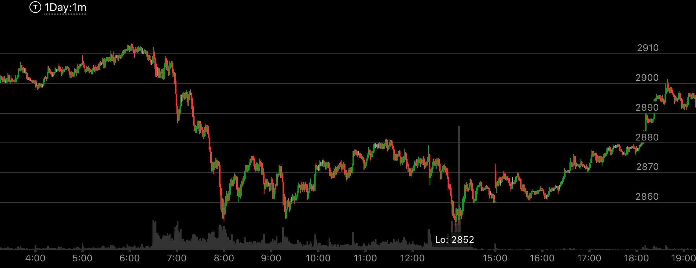
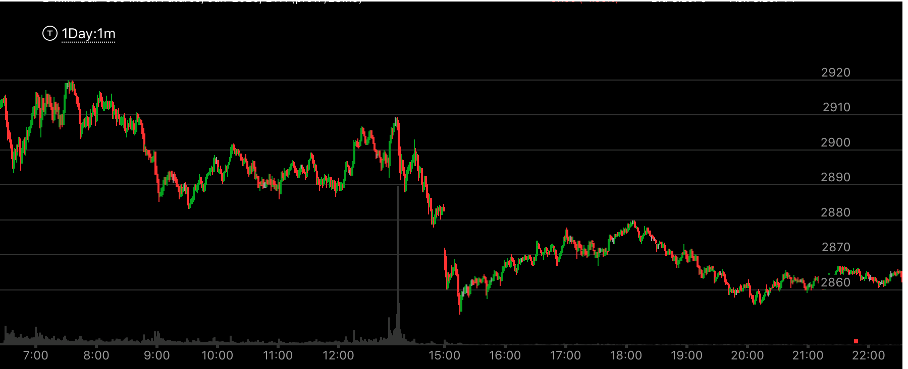

快速大幅运动后，出现了宽广的底部或顶部。
- 一定要快速的运动后，形成很宽的底部，这样，它出现了一个桶的形状，但是它不一定就是转折点，
要取决于前面是反转还是回调。
- 如果是回调，那么可能出现相对弱势。但也可能不出现。如果前面是反转，那么不一定。这个一定要出现
相对弱势，才会反转，否则这个可能不是反转点。

图示:6:30快速下跌，然后出现了宽广的底部，但是要注意6：50的反弹和7：40的反弹，
都从一个位置起来。但是它的7：40的浪更高。说明不是底部，会继续下跌。所以说，这个走势要看更大走势的情况。这更大的走势，是快速下跌后，拉回，再次缓慢下跌，
但是因为这样非常复杂，结果就变成如此了。

图示:这个走势是回调走势，6：00缓慢到达高点后，快速下跌。8：00和9：00出现了双底，
立刻拉回，而在2852出现新低后，停止时间超过了前面，这样就是相对弱势。

图示:13：00点，它快速下跌，然后形成了宽广的底部，然而它从15：20开始反弹，到了18：00它反弹到了
顶部后，缓慢下跌，下跌的时间，远远高于从15：20开始的上涨。